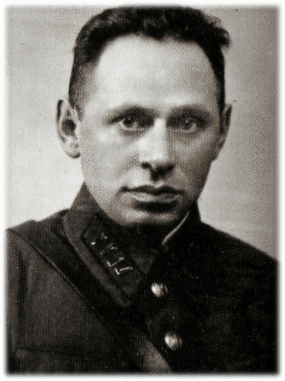

Звание: полковой комиссар
Дата рождения: 1909 год
Дата гибели: 26 июня 1941 года
Ефим Фомин был одним из руководителей обороны Цитадели Брестской крепости. После гибели командира гарнизона он взял на себя руководство обороной и организовывал сопротивление.
Фомин поднимал бойцов в атаки, вдохновлял их на подвиги, организовывал оборону изолированных групп. Он был настоящим политруком, который вёл за собой солдат своим примером.
26 июня 1941 года, после тяжёлого ранения, Ефим Фомин был захвачен в плен. Фашисты расстреляли его в тот же день за отказ сотрудничать с врагом.
Ефим Фомин был расстрелян фашистами 26 июня 1941 года. Перед смертью он не выдал секретов и не попросил пощады. Его последними словами были: "Смерть фашистам! Слава Родине!"
Имя Ефима Фомина увековечено на мемориальных плитах Брестской крепости. Его подвиг стал символом патриотизма и верности присяге.